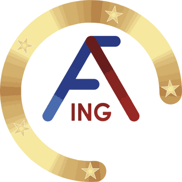
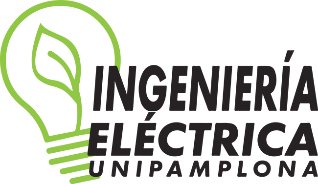
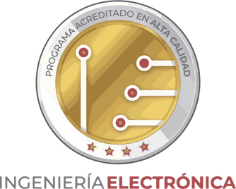
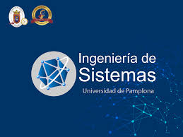
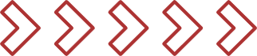
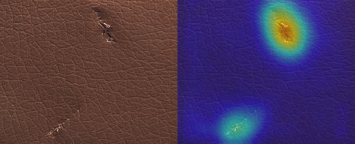
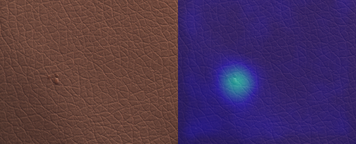
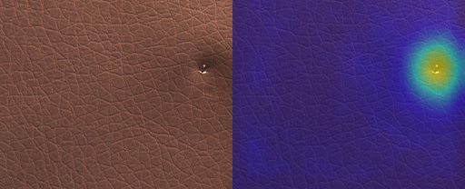
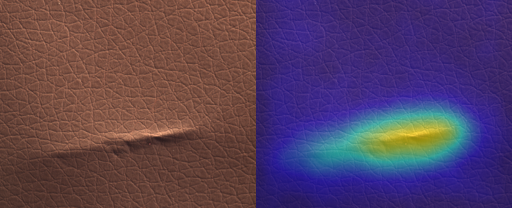
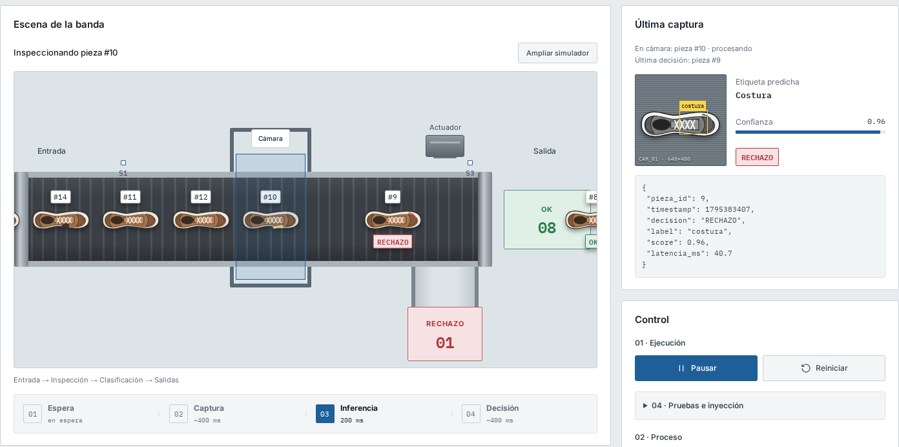

En la manufactura de calzado, la inspección de calidad del cuero se hace a ojo: es lenta, subjetiva y se degrada con la fatiga del operario. Este proyecto construye un prototipo de gemelo digital de una estación de inspección, probado con la metodología Software-in-the-Loop (SIL): una planta virtual envía la foto de cada pieza, un modelo de visión artificial decide si tiene defecto y de qué tipo, y el gemelo refleja en tiempo real cada decisión. Todo se valida sin hardware físico, en el marco de la Industria 4.0.
Un gemelo digital es una réplica virtual que refleja el estado de un sistema físico. En SIL el software de control es el real y la planta es simulada. Para detectar defectos se usa PatchCore, un modelo de detección de anomalías que aprende solo de piezas buenas: guarda una memoria M de parches normales y puntúa cada parche nuevo por su distancia al más parecido.
El umbral t se calibra maximizando el índice de Youden J = TPR − FPR. Un clasificador (ResNet-18 + regresión logística) asigna el tipo de defecto.




Cada par: pieza de cuero real y el mapa de calor de PatchCore, que ubica el defecto sin haber visto defectos al entrenar.

Interfaz del gemelo: la banda, la cámara, el actuador de rechazo y la última decisión en tiempo real.
Las métricas del modelo son sobre imágenes reservadas que el modelo no vio al entrenar (32 buenas, 38 defectuosas). La prueba SIL de punta a punta envió 100 piezas por MQTT y se auditó contra la verdad del simulador.
[1] K. Roth, L. Pemula, J. Zepeda, B. Schölkopf, T. Brox y P. Gehler, "Towards Total Recall in Industrial Anomaly Detection," en Proc. IEEE/CVF CVPR, 2022, pp. 14318–14328.
[2] P. Bergmann, M. Fauser, D. Sattlegger y C. Steger, "MVTec AD — A Comprehensive Real-World Dataset for Unsupervised Anomaly Detection," en Proc. IEEE/CVF CVPR, 2019, pp. 9592–9600.
[3] S. Akcay, D. Ameln, A. Vaidya, B. Lakshmanan, N. Ahuja y U. Genc, "Anomalib: A Deep Learning Library for Anomaly Detection," en Proc. IEEE ICIP, 2022, pp. 1706–1710.
[4] F. Tao, H. Zhang, A. Liu y A. Y. C. Nee, "Digital Twin in Industry: State-of-the-Art," IEEE Trans. Ind. Informat., vol. 15, no. 4, pp. 2405–2415, 2019.